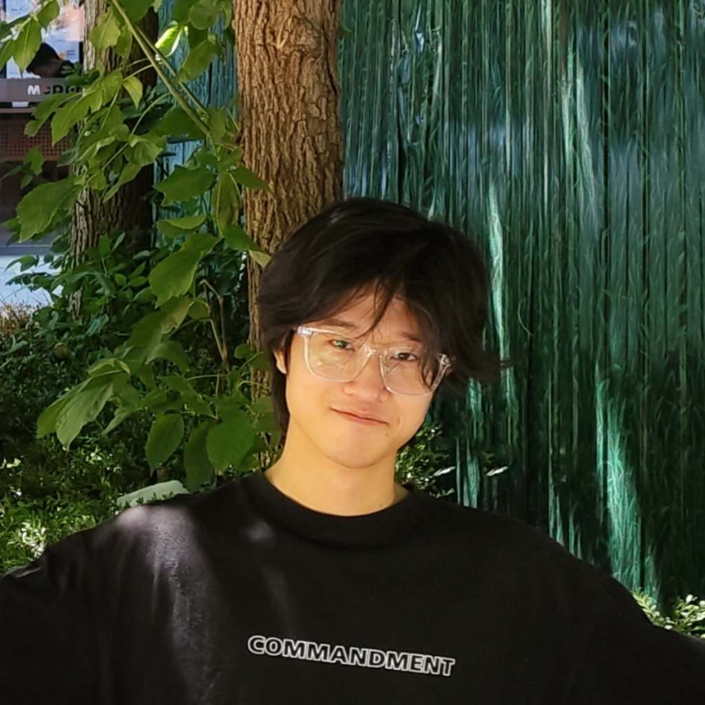
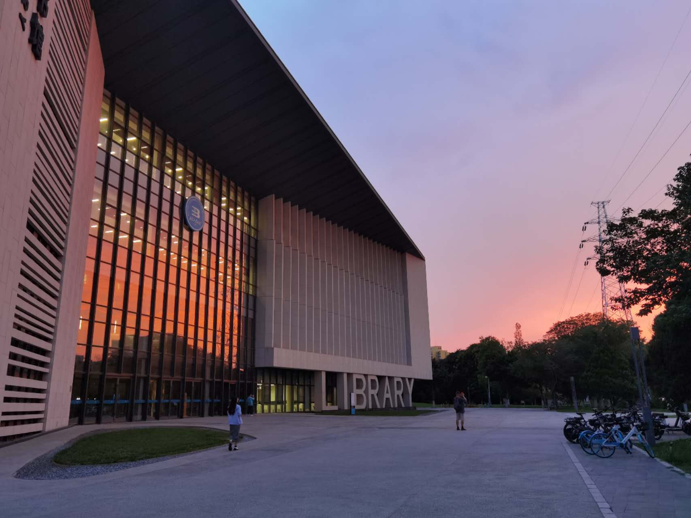
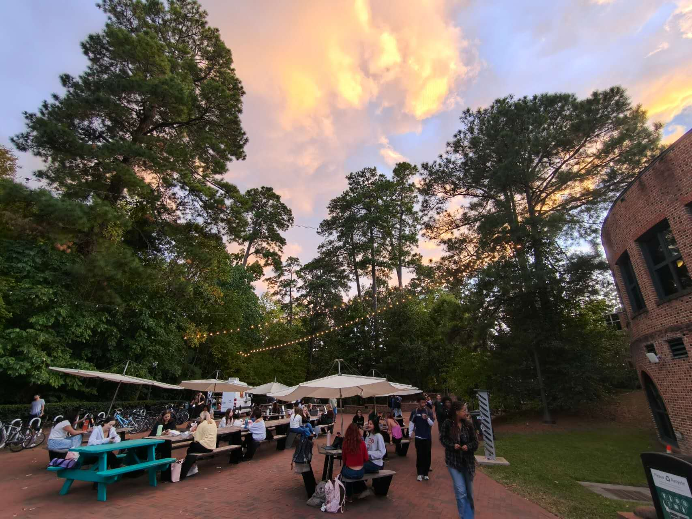
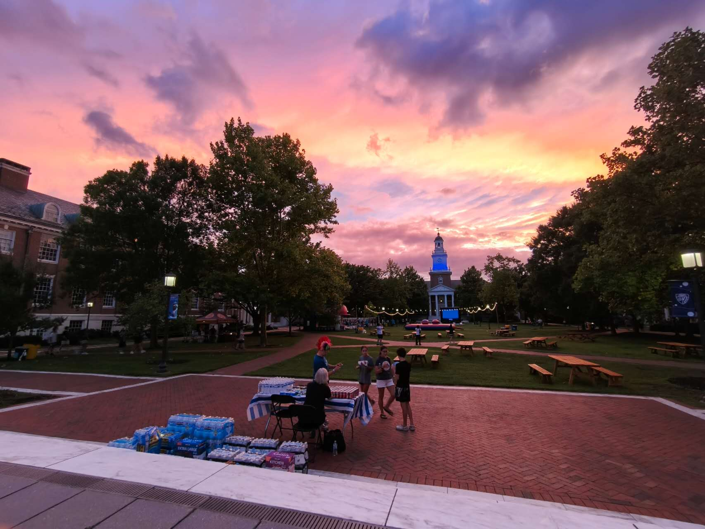

Zhaolong Su
Computer Vision · Multimodal Learning · World Model
Incoming PhD at Cornell. Currently at William & Mary supervised by Prof. Jindong Wang. Graduated from Beijing University of Technology (B.Eng in Artificial Intelligence).
Also conducting research at Johns Hopkins University with Bloomberg Distinguished Prof. Alan Yuille. Previously at Peking University supervised by Prof. Wentao Zhang. Worked at HKU promoting CT-free scoliosis treatment. Interned at Chinese Academy of Sciences supervised by Prof. Guoqi Li.
→ More on the publication page.
 Cornell
PhD
Cornell
PhD
Reviewer:
I love postmodernism and wasteland punk-style photography, and I wish to be a great photographer someday.

Beijing University of Technology
William & Mary
Johns Hopkins Wasteland
Wasteland